Examples
Learn by example to get quickly up to speed.
The examples assume that you have at least basic knowledge about:
- Modern C++ (Butano is based on modern C++ concepts like shared ownership, RAII, standard containers...).
- Old school 2D graphics (what are sprites, backgrounds, color palettes...).
- Basics of retro game development (at least to know that floating point usage is a no-no and things like that).
Deep knowledge of GBA hardware is not required, as Butano wraps most of the functionality in its own classes.
As always, to understand how the little machine works, Tonc and GBATEK are your friends.
Butano brings multiple examples of most aspects of the engine in /path/to/butano/examples/. Each example project contains multiple mini examples showcasing how easy is to work with Butano.
The included example projects are the following:
 Demonstrates usage of backgrounds with affine transformations. |  Shows how to play Direct Sound music and sound effects with Butano. | DMG audio 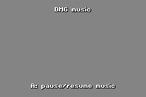Simple DMG music playback example. |
Audio player 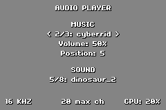Basic audio player example. |  Demonstrates usage of transparency, intensity and fade blending. |  Shows how a camera affects the displayed elements. |
 Shows how to sleep and reset the GBA among other things. | 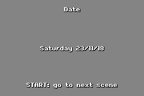 Real time clock (RTC) showcase (if your cart has one). | Dynamic affine background  Basic dynamic affine background example. |
Dynamic regular background 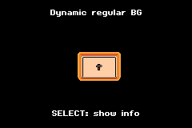Basic dynamic regular background example. | External tool 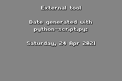Shows how to call an external tool from the project's |  See how it looks this undocumented graphic effect. |
HDMA palette 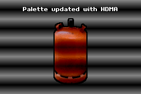In this example, the background palette is updated with HDMA. | 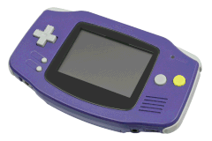 Simple keypad status demo. |  Multiplayer communication through a link cable. |
| 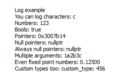 Integration of emulator logging into Butano. | Map collision  Sprite against map collision example. | Mode 7 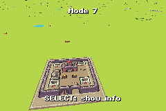Basic SNES mode 7 like background example. |
 Sprites and backgrounds mosaic effects. |  Showcases multiple color palette effects. | Flat polygons  Showcases flat polygons rendering with sprites. |
 Basic code blocks profiling. |  Shows how to use regular backgrounds with Butano. | 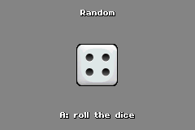 Simple random number generation example. |
| 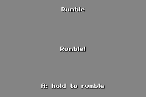 Vibration showcase (if your cart supports it). | Demonstrates usage of one affine matrix for multiple sprites. | Simple sprites examples. |
 SRAM reads and writes with Butano. |  Showcase of Butano sprite text rendering. | Textured polygons  Showcases textured polygons rendering with sprites. |
| 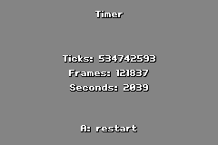 Simple timer example. |  Demonstrates usage of rectangle and sprite windows. | World map  Showcase of a 4096x4096 world map with a perspective effect. |